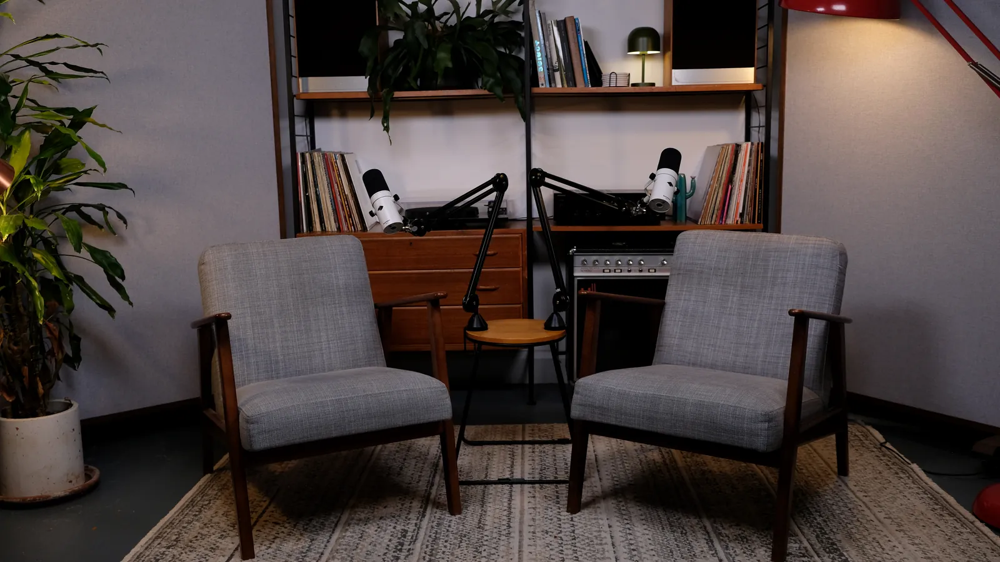
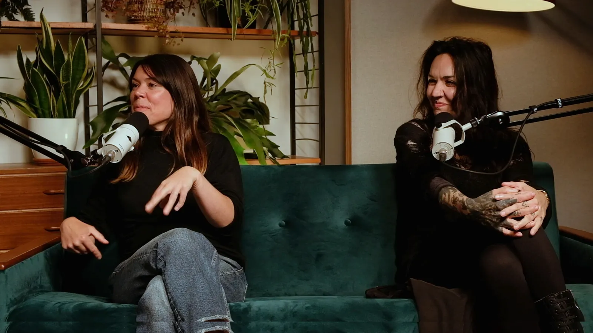
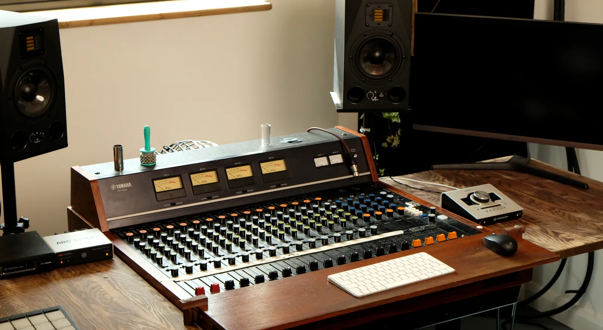

Studio-quality content, 25 minutes from London.
We film video podcasts, interviews and branded content for brands, broadcasters and agencies. You get a crewed, multi-camera studio with broadcast-grade sound, set in a calm countryside space.
Trusted by
One studio for your audio, video and stills.
You can bring your own crew or let us run the whole production. Either way, everything you need is here and ready to go.

Video podcasts
Multi-camera shoots with lighting, an engineer and broadcast sound. Choose a full edit or raw files.
Podcast studio
Corporate video
Talking heads, leadership messages, interviews and social content, filmed in a single day.
Corporate video
Recording & mixing
Two live rooms, a vintage Yamaha PM1000 console and a big collection of mics, amps and synths.
Recording studio
Photo, film & dry hire
Hire a characterful, naturally lit space for shoots, rehearsals and productions by the hour or the day.
Studio hire
London-level production without the London hassle.
Central London studios are busy and expensive. Up Top is private and calm, with natural light, so your speakers relax and come across well on camera.
- Turnkey production. Cameras, lighting, mics and an experienced engineer are ready when you arrive.
- Sound first. We started as a music studio, so your audio will sound noticeably better than most podcast studios.
- Sets that look good on camera. Mid-century furniture, warm practical lights and plants, with several looks in one room.
- Fast delivery. Raw files the same day. Edited episodes and social clips usually arrive within a few working days.
From first email to finished files
Tell us the brief
Send us the format, the number of people and the dates. We reply within one working day with options and a fixed quote.
Plan the shoot
We agree the set, camera angles, branding and running order with you. Viewings and test calls are welcome.
Shoot day
Arrive, have a coffee and sit down. We handle the cameras, sound, lighting and monitoring.
Delivery
You get raw multi-cam files, or a full edit with captions and vertical clips ready for socials.
Relaxed, well run and quick to deliver.
This is a great studio for recording a video podcast with multiple guests: everything is taken care of, making for a really smooth process. Dan is a pleasure to work with and the turnaround on the files was really quick too.
It's always a pleasure making music at Up Top! The environment Dan creates is super relaxed and inspiring and the results are always brilliant.
Up Top is a brilliant space for musical creativity, whether that's for writing, production, mixing or rehearsal. The environment and feel of the place is fantastic.
Frequently asked
Where is Up Top Studios?
Do you provide a camera operator and engineer?
How quickly will I get my files?
How many people can you record at once?
Can we come and see the studio first?
Have a project in mind?
Tell us what you're making and we'll come back with options and a fixed quote within one working day.